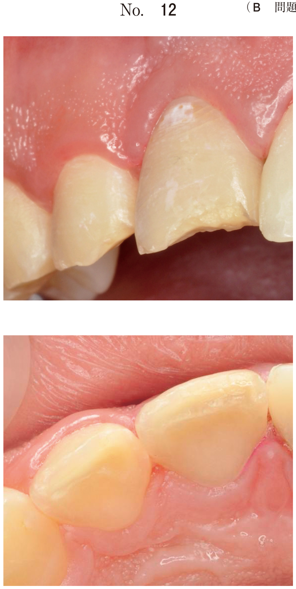

暫間的間接覆髄法（IPC法：Indirect Pulp Capping、GCRP法）は、深在性齲蝕において齲蝕象牙質を一部残して覆髄し、一定期間後に再度開拡して残存齲蝕を除去する方法。
| 検査 | IPC法適応 |
|---|---|
| 自発痛 | なし |
| 冷水痛 | 一過性（軽度） |
| 電気診（インピーダンス） | 18.0±2.0kΩ以上（閉鎖性） |
| X線所見 | 齲蝕と歯髄が近接 |
| 選択肢 | 正誤 |
|---|---|
| 露髄部の閉鎖 | ×（露髄させない方法） |
| 歯髄の乾性壊死 | ×（生活歯髄保存が目的） |
| 髄床底穿孔部の閉鎖 | ×（穿孔修復は別の処置） |
暫間的間接覆髄法の主な目的はどれか。2つ選べ。
【解説】暫間的間接覆髄法の目的は修復象牙質（第二象牙質）の形成と齲蝕象牙質の再石灰化。露髄させずに生活歯髄を保存する方法なので、露髄部の閉鎖は目的ではない。
8歳の女児。下顎右側第一大臼歯の齲蝕を主訴として来院した。一時的に冷たいものにしみる感じはあったが他に自覚症状はなかったという。電気抵抗値は17 kΩであった。初診時の口腔内写真（別冊No.21A）、エックス線写真（別冊No.21B）及び充塡物除去後の口腔内写真（別冊No.21C）を別に示す。治療として暫間的間接覆髄法を選択した。その根拠で正しいのはどれか。2つ選べ。

【解説】8歳の下顎第一大臼歯は幼若永久歯であり、歯髄の生活力が旺盛。X線で齲窩と歯髄が近接しているが、自覚症状は一過性の冷水痛のみで、電気抵抗値17kΩは閉鎖性を示す。生活反応が低いのではなく高いからこそIPC法が適応となる。